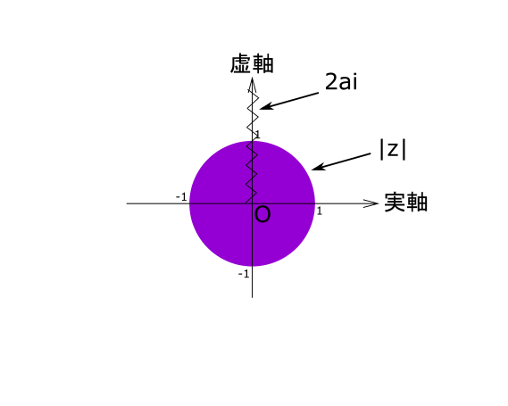

問題
[4] \(a\) を正の定数とする。複素数\(ω=\frac{z}{2}+\frac{a}{i}\)について, 次の(1), (2)に答えなさい。
(1) \(z\) を \(|z| \leqq 1\) を満たす実数とするとき, \(|ω|\) の最大値と最小値を求めなさい。
(2) \(z\) を \(|z| \leqq 1\) を満たす複素数とするとき, \(|ω|\) の最大値と最小値を求めなさい。
(1)
注目ポイント！
\(z\)は実数
解答への第一歩
解説
\(\large |ω| = \left|\frac{z}{2}+\frac{a}{i}\right| = \left|\frac{z}{2} -ai\right| = \frac{\left|z - 2ai\right|}{2}\)
\(a>0\)より
\(2ai\)の点は虚軸上の原点より上の定点だから、
求める\(\large |ω|\)の最大値, 最小値は \(\large \left|z\normalsize - 2ai\right|\) の最大, 最小を調べて求める。
ここで, \(z\) は実軸上の点 \(-1, 1\) の間であるから,
最大値: \(\large\frac{\left|1 - 2ai\right|}{2} = \frac{\sqrt{4a^2 + 1}}{2}\)
最小値: \(\large\frac{\left|0 - 2ai\right|}{2} = a\)
(2)
注目ポイント！
\(z\)は複素数
解答への第一歩
解説
(1)より\(\large |ω| = \frac{\left|z - 2ai\right|}{2}\)である。
条件より \(z\) は単位円の周上とその内部に存在するから、(1)と同様に考えて,
最大値: \(\large\frac{\left|-i - 2ai\right|}{2} = \frac{2a + 1}{2}\)
最小値: \(0 < 2a < i\) すなわち \(0 < a < \frac{i}{2}\) のとき \(0\)
\(a>i\)のとき, \(\large\frac{\left|i - 2ai\right|}{2} = \frac{2a - 1}{2}\)